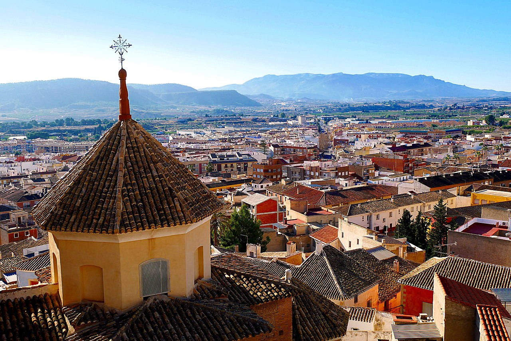

Mula, Murcia
Mula es una localidad y municipio español perteneciente a la Región de Murcia, situado en la comarca del Río Mula, de la que es su capital. La población es cabeza del partido judicial del mismo nombre. Posee 17 074 habitantes (INE 2021),1 repartidos entre el núcleo urbano y diversas pedanías. El municipio es famoso por las Fiestas del Niño Jesús de Mula y la Tamborada, declarada Patrimonio cultural inmaterial de la Humanidad por la UNESCO.

Toponimia
A lo largo del tiempo se han expuesto varias teorías sobre el origen del topónimo Mula. Aunque tradicionalmente se ha considerado que provenía del término latino Mola, al aparecer ya como Mula en el tratado de Teodomiro de 713, algunos autores se inclinan por considerar que el asentamiento romano del cerro de la Almagra, emplazamiento precedente del actual, recibió en realidad la misma denominación: Mula. Mula procedería etimológicamente del adjetivo latino mulleus-mullea-mulleum. Término que, atestiguado en Festo, Plinio el Viejo, Catón, etc., significa de color rojo o púrpura. Así, sería posible que el actual cerro de La Almagra se denominara Mons Mulleus, o el poblamiento en él situado Civitas Mullea, y que los moradores de Mula, al trasladarse al emplazamiento actual, siguieron conservando el nombre de su ciudad, por lo que los árabes mantuvieron el nombre del primitivo núcleo.2
Pedanias
Las principales pedanías del extenso término municipal muleño son: Fuente Librilla, Yéchar, Baños de Mula, La Puebla de Mula, Casas Nuevas y el Niño de Mula
Clima
Mula pertenece al mismo dominio climático que la ciudad de Murcia. Disfruta de un clima mediterráneo seco (mediterráneo árido) caracterizado por la escasez e irregularidad de precipitaciones con un total pluviométrico anual que varía notablemente. La precipitación anual es de 340 mm, es enero el mes más seco y octubre el más húmedo. Su temperatura media anual de 18,2 °C sitúa a Mula ligeramente por encima de los 18 °C que separa las variantes fría (BSk) y cálida (BSh) de este tipo de clima. Con inviernos suaves y veranos calurosos, llega a tener más de 300 días de sol al año. Las temperaturas oscilan entre los 16 °C y los 4 °C de enero y los 34 °C y los 20 °C de agosto, si bien se superan los 40 °C muchos veranos. Estos niveles pluviométricos son superiores en las zonas serranas del municipio, al igual que cuentan con menores temperaturas, produciéndose nevadas invernales en el macizo de las sierras del Cambrón y Ponce (con 1521 m s. n. m. en el pico de La Selva, máxima altura del municipio), o la parte muleña de Sierra Espuña.